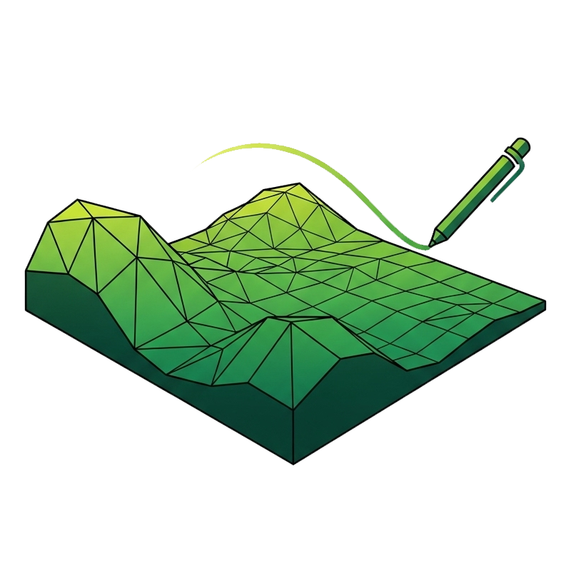
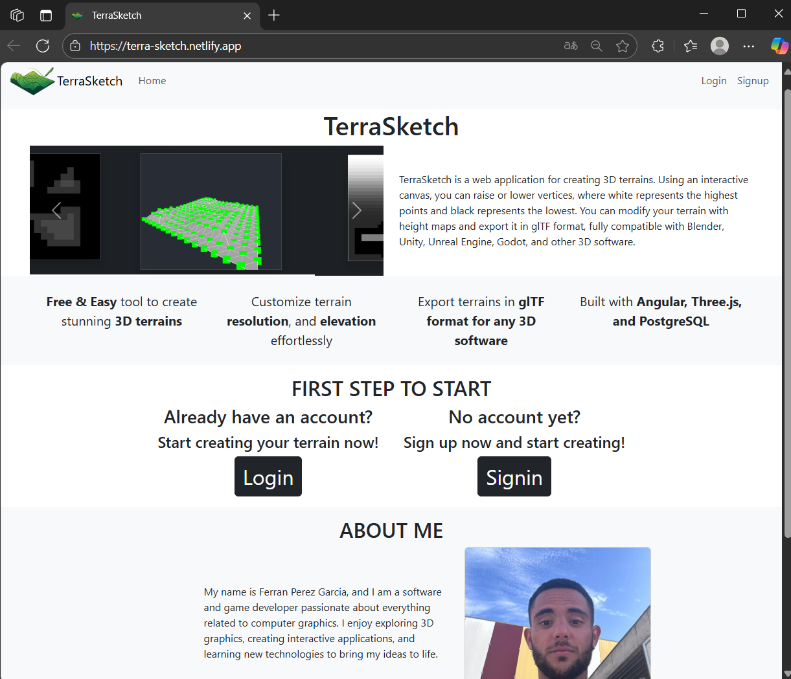
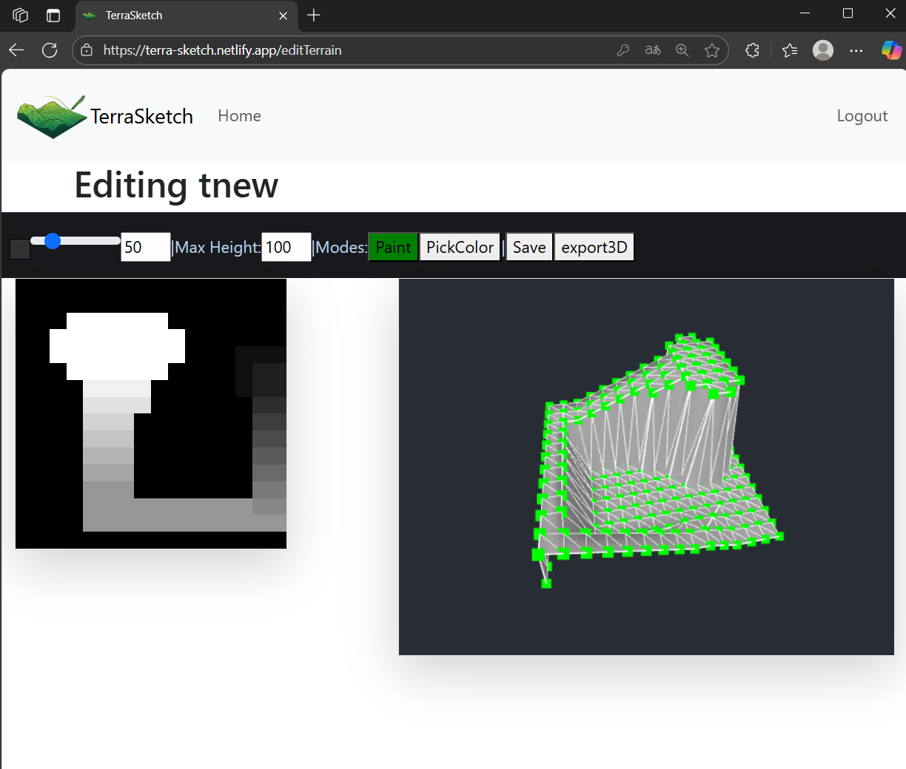

TerraSketch
Project Info
Role: Full Stack Developer
Team Size: 1
Time: 1 Week
Technologies: Angular, TypeScript, PostgreSQL, Bootstrap

Introduction
TerraSketch is a web application for creating and editing 3D terrains through an interactive painting system. Users paint in grayscale on a 2D canvas, where white represents the highest elevations and black the lowest. The painted height map is instantly reflected on a subdivided 3D plane using Three.js.
Background
During the last weeks of July 2025, I dedicated my free time to studying the Angular framework, since it is widely used in professional environments. I set myself the goal of understanding not only the syntax, but also the complete development flow: creating and managing components, using Angular services for communication, mastering component lifecycles, and applying TypeScript effectively.
To put this knowledge into practice, I started by building small projects that helped me consolidate these concepts. Once I felt confident, I wanted to challenge myself with a larger and functional application. Since I have always been passionate about computer graphics and interactive 3D applications, I decided to create a project that combined both: web development with Angular and real-time 3D rendering with Three.js. That is how TerraSketch was born.
Features
- Interactive Heightmap Editor – Draw terrains in grayscale and see instant 3D updates.
- Multiple Terrain Resolutions – Supports 64, 256, and 1024 vertices (8×8, 16×16, 64×64).
- User Accounts – Built with PostgreSQL, allowing users to save and load their terrains.
- Export to .glTF – Terrains can be exported for use in Blender, Unity, Unreal Engine, Godot, and other 3D software.
- Web-based – Fully functional in the browser thanks to Angular and Three.js.
Gallery

